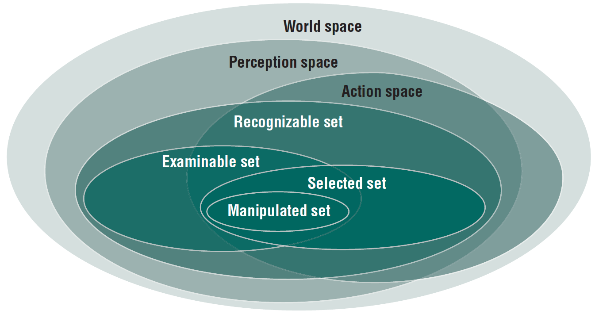

An Environment Simulator for
Mobile Context-Aware System Design
Supervisor: Thomas Olof Pederson
Practical Contribution - EgoSim
- Open-source simulation framework
- Helps system designers to produce simulations of egocentric systems
EgoSim - Benefits
- Works with 3D models from third party software
- Easy to include everyday physical objects and devices into the system design
- Interact with the environment by controlling a virtual avatar
- Classify entities based on the SSM
- Provides easy access to the context through a RESTful API
- Open-Source
Overview
- Background
- Motivational Example
- The EgoSim Framework
- DEMO!
- Evaluation Results

- Conclusion & Future Work
Introduction
- Ubicomp
- Context-Awareness & Context
- Context-Aware Systems
Introduction
- Device-Centric Design - Easy to incorporate device, hard to incorporate physical objects
- Egocentric Interaction Paradigm
Introduction: SSM
The Problem
Designing and developing mobile context-aware systems in a real-life set-up represents a tedious, costly and time consuming process. Moreover, incorporating physical objects into the system design, making further development and evaluation of the egocentric paradigm a challenge.
The Goal
"Simulation enables researchers to evaluate scenarios and applications without the difficulties of dealing with hardware sensors and actuators."
[V. Reynolds, V. Cahill, and A. Senart, "Requirements for an ubiquitous computing simulation and emulation environment", 2006]
Motivational Example: Secure Outlets
The hypothetical problem presented in this scenario is that families cannot make their homes secure enough for their children. To provide a solution for this problem, there's a need for a system to constantly monitor the objects a child should keep away from and should not be interacting with.
EgoSim
EgoSim: Open-Source Framework
https://github.com/ksza/EgoSim
Built on top of the JMonkey Engine 3D game engine
EgoSim: Overview & Features
- Works with third party 3D models (i.e. Blender 3D models)
- Import and Edit environments with Egocentric Context Data parameters
- First-Person navigation and interaction with the simulated environment
- Real-Time computation of the SSM spaces
- RESTful API to retrieve SSM context data
- Continuous visualisation service -- the ContextClient
EgoSim: User Roles
- As a "System Designer"
- As a "Simulation User"
- As a "Third Party Service"
Demo!
Evaluation
- What we wanted: comparative study
- What we did: user testing
Evaluation - Procedure
- Total of 17 participants with good seniority level in SW engineering (~ 6.41 years)
- 47.1% familiar with context-aware computing concepts
- Only 1 participant familiar with concepts of egocentric interaction paradigm
- Evaluation tasks: WarmupTask, Assisted Living Facility & Childproof
- Two feedback forms: The Framework & The Simulation
- Characteristics: usefulness, usability, responsiveness & classification
Evaluation - Positive Reactions
"The simulation could provide a cost effective way of gaining valuable insight into the design of an Assisted Living Facility before such a facility is constructed."
"Objects can be easily decorated with context information and interacting with them can be tested quickly because the framework takes care of basic interaction and movement in the space."
Evaluation - Suggestions
"I consider the condition for an object to enter the perception space to be too weak. A user cannot identify an object if only a pixel is within his field of vision ..."
"Historical information about the agent: what actions has he performed so far, objects with which he has interacted with so far, etc"
Future Work
Collected as issues in the GitHub repository


Future Work
- Involve game design / development students
- Further develop the framework's capabilities: support for sensors / actuators, emulated software on devices, etc
- Integrate with virtual reality kit
- Improved API - looking into the future, this could be the same in the production environment
Conclusion
- Useful framework to easily build simulations of egocentric systems
- Promotes body-centric design
- Easy to include everyday physical objects and devices into the system design
- Provides easy access to the context through a RESTful API
- Works with 3D models from third party software
- Open-Source